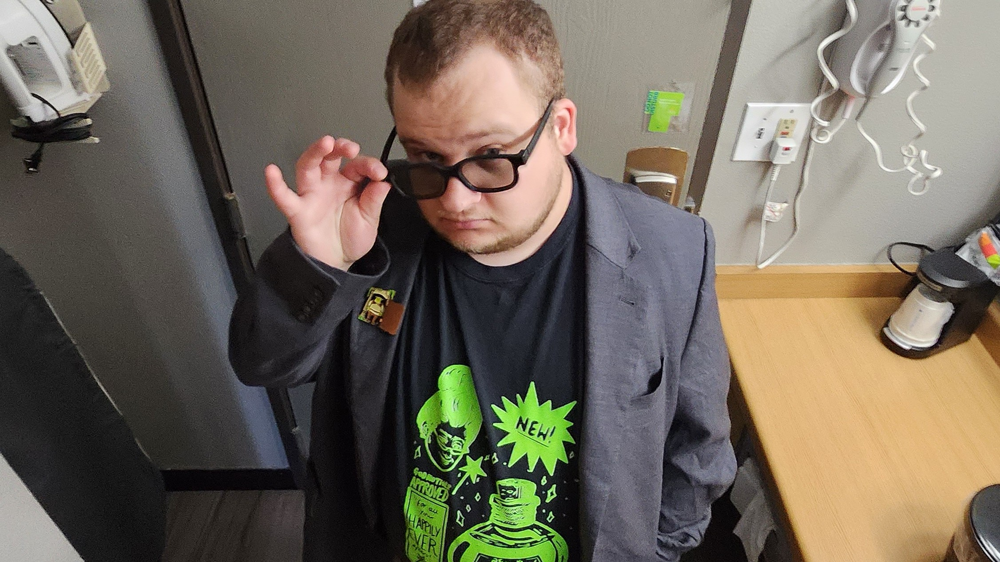

Escape Pod Entertainment
Escape Pod originally started as a podcast in 2017 between Jonathan Cabeen and Christian Gilstrap. The two invited on a diverse lineup of small internet creators including musicians, YouTubers, comedians, artist, and game developers. After 17 episodes, Escape Pod was silently retired as a podcast due to scheduling conflicts, and Christian moving to a different time zone. Jonathan continued the channel on his own for a few years with occasional uploads and livestreams, however, once he started working on films, he decided he wanted his focus to be on occasional bigger projects instead of frequent low effort ones. The results have been Jonathan making more frequent appearances on the Uncultured Swine Studios channel alongside Ben Clark and Jack Ciesniewski. Jonathan wishes to return to the Escape Pod YouTube channel one day, but is waiting for the right time with the right ideas. He is currently working on the screenplay for his feature length film Chemist.
Actor
Writer - Director - Actor
Writer & Actor
Actor & Editor